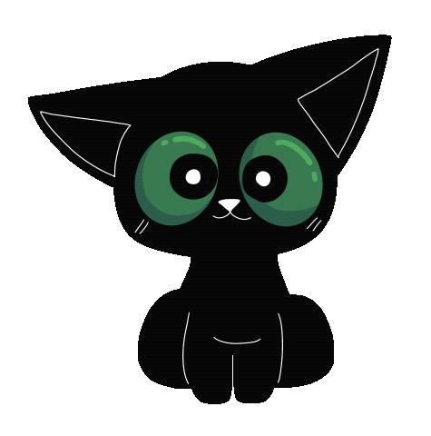

<ion-header [translucent]="true">
  <ion-toolbar>
    <ion-buttons slot="start">
      <ion-back-button></ion-back-button>
    </ion-buttons>
    <ion-title class="center-title">Goals</ion-title>
  </ion-toolbar>
</ion-header>

<ion-content class="goalsPage">
  <!-- Content for the goals page -->
  <ion-content class="goals-page">
    <h1 class="goalMinder">GoalMinder</h1>
    
    <!-- Container for the notepad -->
    <div class="notepad-container">
      <!-- Contenteditable area for user to emter goals -->
      <div class="notepad-content" contenteditable="true"></div>
      
      <!-- Tips button for opening goals tips -->
      <ion-icon name="information-circle-outline" class="tips-icon" (click)="openTipsModal()"></ion-icon>

      <!-- Button to save goals and proceed to the next step -->
      <ion-button expand="block" shape="round" (click)="saveGoals(); next()">Save and Next!</ion-button>
      
      <!-- Image of a cat -->
      
      
      <!-- Container for quotes -->
      <div class="quotes">
      </div>    
    </div>
  </ion-content>
</ion-content>
